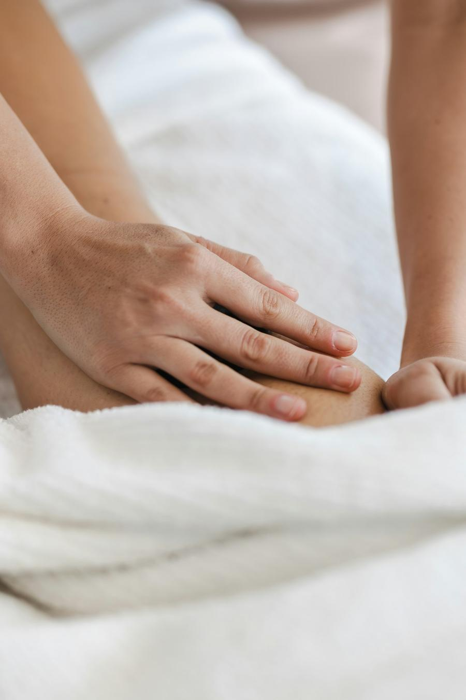
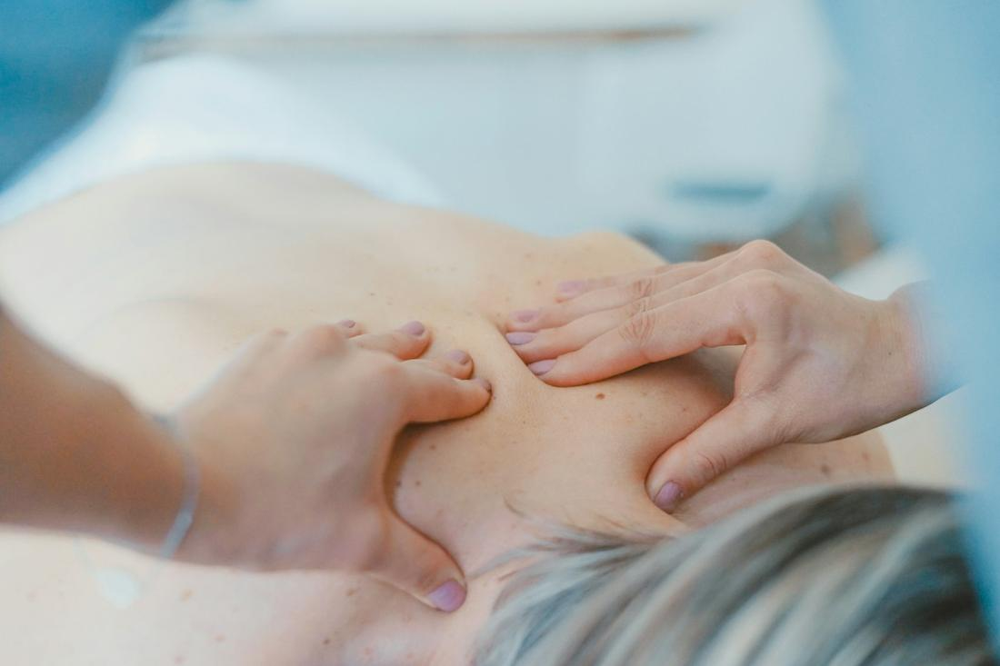
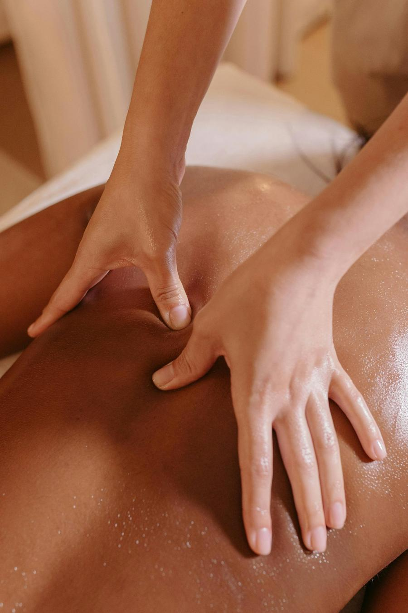
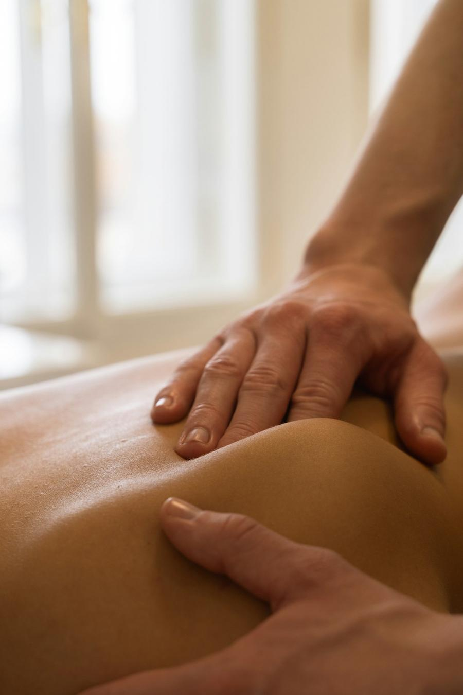
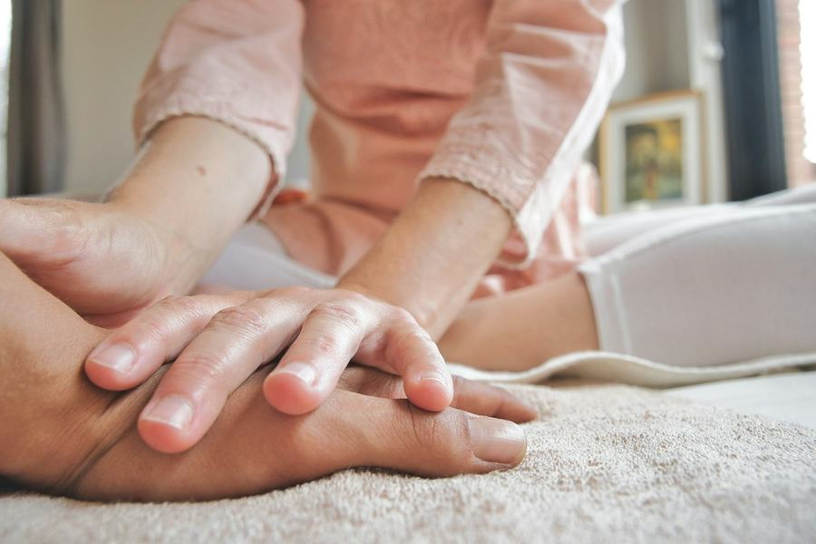

Drenagem linfática
Movimentos suaves e ritmados que ajudam a reduzir inchaço e retenção de líquidos, com sensação de leveza.
Saber mais pelo WhatsAppMassagens & fisioterapia em domicílio · Limeira
Sou a Daniele Sabino, fisioterapeuta há 11 anos. Levo até a sua casa drenagem linfática, massagem modeladora e terapias manuais para aliviar tensões, além de fisioterapia para reabilitação, sempre com um plano pensado para você.

Para quem é
Se você se reconheceu em algum desses, uma sessão pode fazer diferença. Veja as massagens
Atendimentos
Cada sessão começa com uma conversa sobre o que você sente e o que quer alcançar. Como fisioterapeuta, eu escolho a técnica e a pressão certas para o seu momento.

Movimentos suaves e ritmados que ajudam a reduzir inchaço e retenção de líquidos, com sensação de leveza.
Saber mais pelo WhatsApp
Manobras mais firmes que trabalham contorno corporal e ativam a circulação, como parte de uma rotina de cuidado.
Saber mais pelo WhatsApp
Massagem e alongamento para soltar tensões, dores musculares e aquela rigidez de pescoço e costas que acompanha o dia a dia.
Saber mais pelo WhatsApp
Fisioterapia para recuperar movimento, força e autonomia após lesões, cirurgias ou períodos de pouca mobilidade, inclusive para idosos.
Saber mais pelo WhatsAppAtendimento domiciliar
Sem trânsito, sem sala de espera. Você recebe o cuidado no seu espaço, no seu horário, e eu adapto o atendimento à sua rotina.
Sobre mim
Cuidar também é movimento. Mais que tratamento, é sobre pessoas.
Daniele Sabino
Sou fisioterapeuta há 11 anos, apaixonada pelo cuidado e pelo movimento. Acredito em estar presente e olhar cada pessoa de forma individualizada, respeitando as necessidades e os objetivos de quem eu atendo.
Uno conhecimento e experiência para oferecer um atendimento personalizado, em todas as fases da vida. Seu bem-estar é a minha prioridade. Fora do consultório, sou esposa e mãe de pets.
Agende sua sessão
Me chame no WhatsApp para tirar dúvidas, saber valores e combinar o melhor horário.